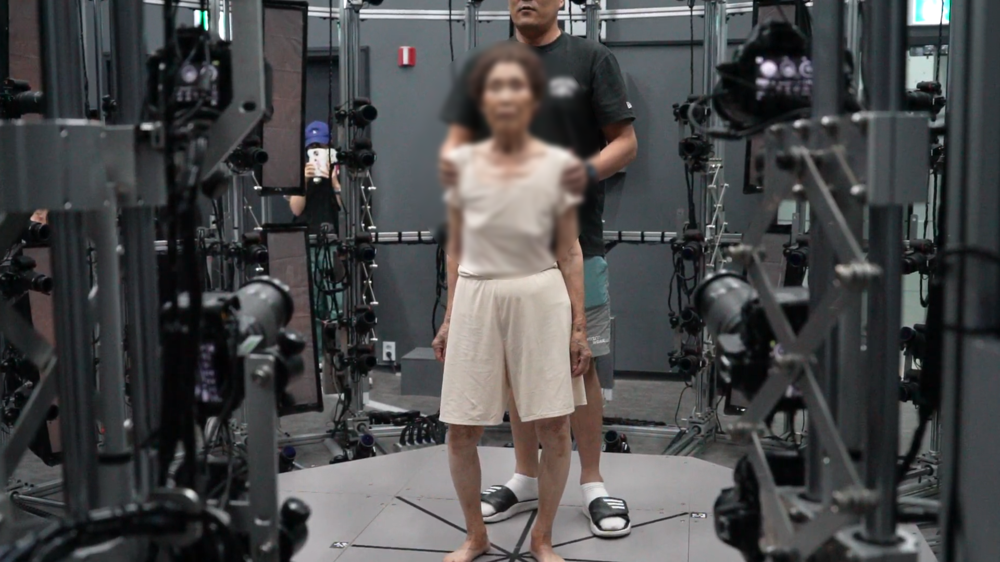
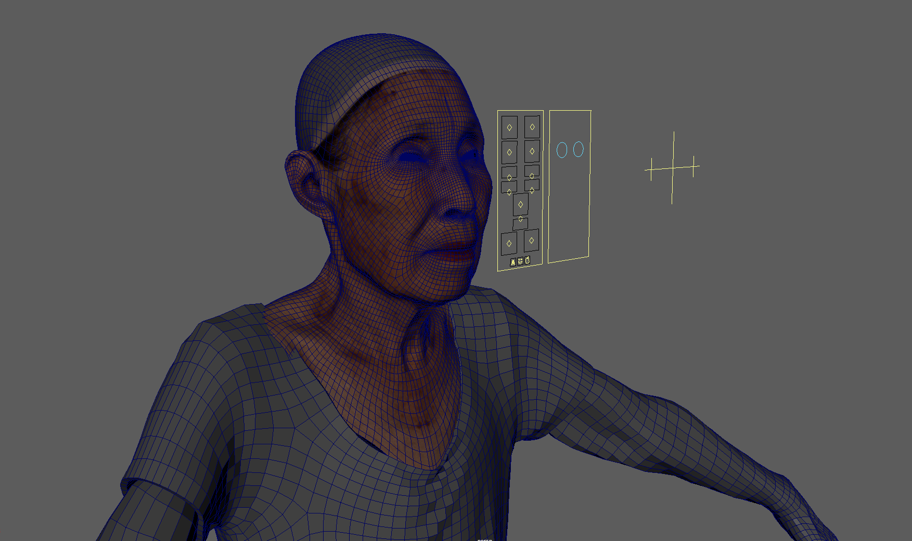
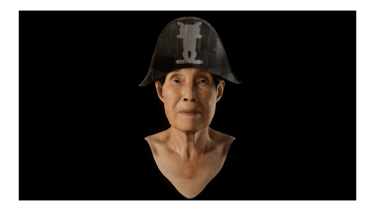
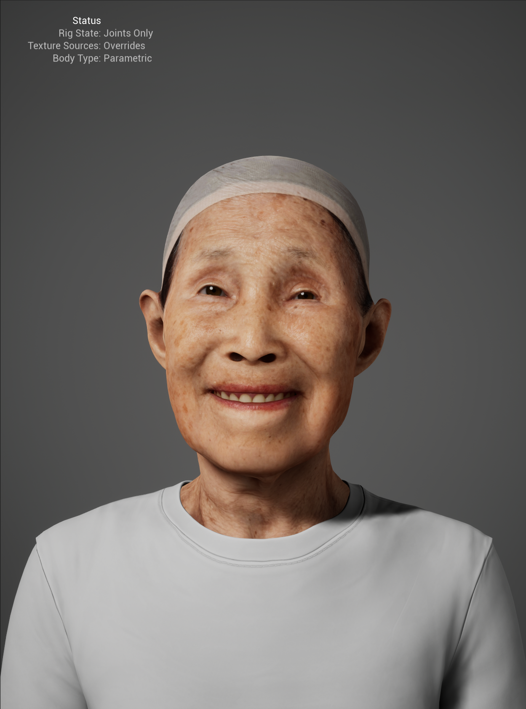
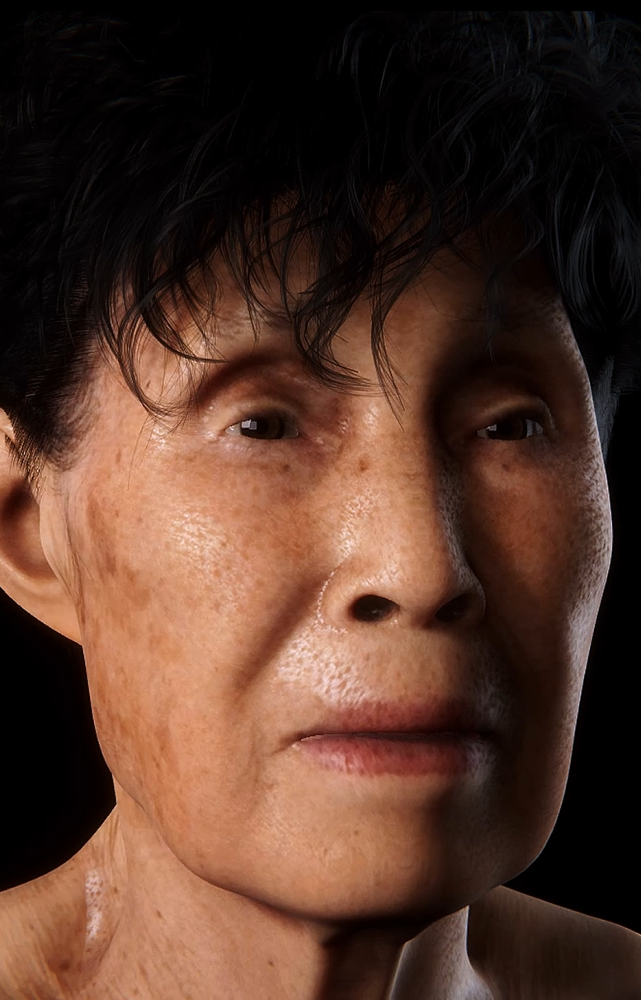

Shininho is a digital human reconstruction project that revives media artist Yaloo's grandmother through volumetric scanning, MetaHuman-based rigging, and AI-driven gesture animation — exhibited across multiple international venues including Songeun Art Award, LA Rip Space, SF 836M, and West Seoul Museum of Art.
The project explores how affection, grief, and presence can be translated into computational form. Subtle gestures — breathing, blinking, weight shifts — were synthesized to simulate traces of life that no longer exist in the physical world.
As Technical Artist and Pipeline Lead, I was responsible for the full character pipeline: volumetric scan processing, Maya rigging and UV workflow, MetaHuman integration, UE5 Sequencer cinematics, Blueprint-driven interaction systems, and real-time performance optimization across multiple exhibition environments.
The pipeline was designed to be reproducible and scalable — documentation and asset conventions were maintained throughout to support future iterations of the project.

Full-body 4K textured scan captured with synchronized multi-camera arrays, recording geometry and albedo simultaneously. Raw mesh data was cleaned, retopologized, and optimized in Maya to meet real-time polygon budgets while preserving surface detail for hero-distance rendering.
The character was rigged in Maya with a full-body skeleton, then refined with custom joint orientations for UE5 compatibility. Facial animation was driven by 64 ARKit-compatible blendshapes built with Faceit, enabling both performance capture playback and procedural gesture synthesis. Control Rig in UE5 was used for runtime adjustments and IK solutions.


Textures were processed in Photoshop and Substance Painter — removing scan artifacts, baking normal maps, and generating roughness / metallic channels for PBR workflow. UE5 shaders were custom-built to simulate organic subsurface scattering and translucency on skin, hair cards, and fabric, maintaining visual fidelity across varying exhibition lighting conditions.

Cinematic sequences were authored in UE5 Sequencer — camera animation, lighting transitions, and character animation tracks were composited for exhibition playback. Blueprint visual scripting drove interactive trigger systems, loop logic, and audience-responsive behavior. Lumen and Nanite were leveraged for high-fidelity real-time rendering without baked lighting.

GPU, CPU, and memory budgets were profiled using UE5's Unreal Insights and RenderDoc across exhibition hardware configurations. LOD chains were set for the character mesh, with custom distance-based material switching. Draw call counts and texture streaming were tuned per-venue to ensure stable 60fps playback in gallery environments ranging from single-display to multi-screen projection setups.
Full-body skeleton rigging, joint orientation, UV layout, blend shape setup, and export pipeline to UE5 via FBX with maintained naming conventions and asset integrity.
MetaHuman integration, Control Rig runtime IK, Sequencer-driven cinematics, Blueprint interaction logic, Lumen global illumination, and Nanite virtualized geometry.
Asset naming conventions, performance budgets, and technical documentation maintained throughout. Python scripts written for batch export and texture validation in Maya.
Collaboration with media artist Yaloo (@yalooreality) — exhibited at Songeun Art Award, LA Rip Space, SF 836M Residency, and West Seoul Museum of Art (2024–2026).